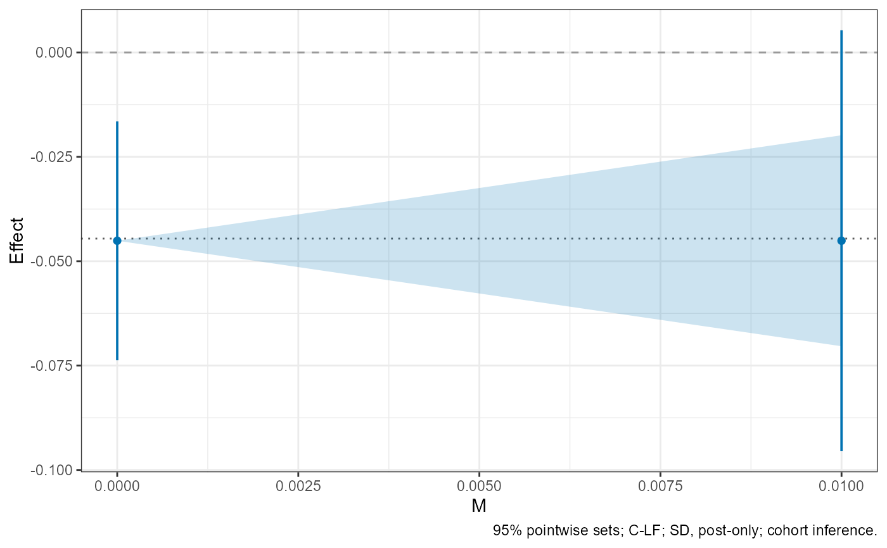

Run robust inference without re-estimating the cohort-period coefficients. Relative period one is the first treated period; zero is the last untreated period. Each reported confidence set has pointwise, rather than simultaneous, coverage. On unbalanced panels the balanced-design mapping is approximate.
Usage
cohort_sensitivity(
fit,
restriction = "SD",
M,
target = "att",
framework = "cohort",
method = NULL,
full.path = NULL,
conf.level = 0.95,
parallel = FALSE,
cores = NULL,
seed = NULL,
control = list(),
balanced = FALSE,
cohort.paths = NULL
)Arguments
- fit
A fitted object returned by
cohort_fit()orcohort_input().- restriction
Either
"SD"(smoothness) or"RM"(relative magnitudes).- M
Nonnegative sensitivity bounds. SD bounds are in outcome units; RM bounds are dimensionless multiples of each cohort's pre-period benchmark.
- target
"att","dynamic", or"cohort-dynamic".- framework
"cohort"(default) or"aggregate".- method
"FLCI","Conditional", or"C-LF". The default,NULL, is C-LF under both SD and RM, as the paper recommends. FLCI is available only under SD.- full.path
For SD, restrict pure pre-treatment curvature as well? The default,
NULL, is TRUE for FLCI and FALSE (post-only) for Conditional and C-LF, so the default SD analysis is C-LF under the post-only restriction. Not applicable to RM.- conf.level
Pointwise confidence level in (0.5, 1), default 0.95.
- parallel
Logical; run independent inference tasks in parallel?
- cores
Number of workers. Defaults to detected logical cores minus one, with a minimum of one. Workers are capped by the number of independent target/bound tasks, or signed components for a single RM task.
- seed
Optional integer seed. Fixed seeds give results independent of worker count and preserve the caller's random-number state.
- control
Named list of numerical controls; see the section "Numerical controls" of
vignette("detailed-guide", package = "CohortHonestDiD").max.refinementsis a nonnegative integer (default 3; 0 disables retries). Eligible unresolved searches double the regular grid intervals per retry.max.evaluationsis the cumulative limit on distinct confidence-set point evaluations per target/bound, including endpoint probes, topology audits, and retries. Simulated least-favorable critical values are reused. For Conditional inference,max.expansions(default 6) caps bilateral domain doublings, including the two required adjacent-domain agreements. Values 0 or 1 returndomain_stability_limitand no set. Refinement restarts the same domains at a finer mesh within the shared budget. For Conditionalgrid.radius > 8,grid.pointsspecifies the reference density at radius 8: the effective initial count grows enough to keep the initial spacing no coarser than that reference. Atgrid.radius <= 8,grid.pointsremains the literal initial count. Larger ranges require more evaluations and may exhaust the unchanged cumulative budget.- balanced
Logical. If
TRUE, the target and, under aggregate inference, the aggregated event study use only the relative periods observed for every cohort, the balanced window. DefaultFALSE. See the section "Balanced targets".- cohort.paths
Only with
balanced = TRUEunder cohort inference:"full"(used whenNULL) restricts each cohort's whole path, and"window"restricts each cohort's path only inside the balanced window. Supplying it otherwise is an error.
Value
A cohort_sensitivity object containing intervals (one
row per connected confidence-set component), estimates,
settings, and detailed results. Empty sets and numerical
failures have explicit status rows. With balanced = TRUE, see the
section "Balanced targets" for the added settings and the
aggregation element. For FLCI results, results[[k]]$weights
holds the weights of the linear estimator; flci_weights
tabulates them.
Details
The defaults follow the paper's recommendation: cohort inference
with the C-LF procedure, under the post-only restriction for SD. Request
the full-path FLCI with method = "FLCI". The FLCI needs the
stronger full-path restriction and should be used with caution when some
cohorts contain only a few units.
Inference uses the covariance stored in fit; use
cohort_fit(covariance = "CR2") for the bias-reduced CR2 covariance.
Conditional and C-LF procedures return success = FALSE, a warning,
and missing confidence-set bounds when the target is deterministic or a
required moment has zero or numerically degenerate variance. The status is
unsupported_zero_variance or unsupported_moment_variance.
Singular covariance alone does not trigger this limitation. FLCI supports
its exact zero-covariance limit.
Search diagnostics include search.attempts (attempt, grid.points,
new.evaluations, cumulative.evaluations, success, status),
final.grid.points, refinements, and test.evaluations.
The requested grid size remains in settings. Refinement preserves endpoint
tolerances and all certification checks; exhaustion returns a warning and
no set. C-LF searches use certified outer bounds from their own first-stage
acceptance inequalities. Under SD, support.certified,
support, and search.domain record these bounds and the
searched domain. Finite-grid agreement does not certify exhaustive interior
topology.
Conditional inference searches concentric finite domains centered at a
primitive-trend contrast, with a normalization-invariant sampling scale.
The initial radius adds the plugin radius and grid.radius times this
scale. Wider domains retain the regular mesh spacing. Two successive
adjacent-domain agreements are required in addition to endpoint checks.
topology.audit = FALSE skips interior mesh checks only; mandatory
domain and endpoint checks remain. The automatic endpoint tolerance still
uses the conventional target standard error, separately from the search
scale. Diagnostics include search.center, search.scale,
search.scale.source, initial.domain, search.domain,
requested.domain, domain.stable, domain.expansions,
agreement.streak, and domain.history. search.domain
records evaluated coordinates; it is empty before any evaluation.
requested.domain records a range blocked by an allocation or
evaluation limit. Print and summary methods report searched ranges. Bounded
numerical search does not rule out components outside those ranges;
support.certified, topology.certified, and
inversion.exact remain FALSE for Conditional results. Limits return
a warning and no set. With topology.audit = TRUE, an additional
shifted finer grid checks the quarter and three-quarter points of
registered regular cells, independently of inserted anchors. Disagreement
uses the same bounded refinement policy. Finite range and mesh checks can
still miss arbitrarily narrow interior components or gaps, as well as
components outside the searched range. Density diagnostics are
initial.grid.points, grid.density.adjusted,
reference.domain.radius, and reference.grid.spacing. The
reference radius adds the same plugin radius to eight times the search
scale. Integer ceiling and any necessary upward rounding preserve an
initial spacing upper bound, not exact lattice nesting across separate
radius requests. Settings retain the requested count; histories and
final.grid.points record the effective counts. Starting at a larger
count does not consume a refinement. Reference fields are NA when no
wider-range calculation is needed or reached.
Balanced targets
The balanced window runs from relative period L to S. S
is the last post-treatment period and L the earliest pre-treatment
period that every cohort in fit has. Both are read from the
coefficient labels, so the window is also defined for unbalanced panels and
for cohort_input objects. With balanced = TRUE the ATT
averages the cells of periods 1 to S, each cohort weighted by its mass
in every period, and dynamic and cohort-dynamic targets are reported for
periods 1 to S only. Under aggregate inference the aggregated event
study is formed on periods L to S, with the same cohort weights
in every period (balanced aggregation). This removes the change in the
cohorts averaged at each period, but it changes the estimand. It does not
remove the change in the not-yet-treated comparison groups, which enters the
imputation and CS-NYT biases through the bias map W, so balanced
aggregate and cohort inference can still differ.
Under cohort inference cohort.paths sets the cohort paths that the
restriction uses. "full" keeps every cohort's whole path, as without
balanced. "window" uses each path only inside the window:
coefficients after period S are dropped, the RM benchmark is a
cohort's largest change between periods L and 0, and the full-path SD
restriction bounds only the pre-treatment second differences inside the
window. Pre-treatment coefficients before L are kept, because the bias
map and the imputation normalization use them. Under the post-only SD
restriction both choices give the same plug-in identified set; their
confidence sets can differ slightly, for example through the simulated C-LF
critical value. On a balanced panel, imputation and CS-NYT give the same
balanced cohort inference under either choice, but in general not the same
aggregate inference.
With balanced = TRUE, settings also contains balanced,
cohort.paths (NA under aggregate inference) and window
(lower = L, upper = S). Aggregate results also
contain aggregation: the aggregation matrix
(aggregation_matrix), the aggregated coefficients (betahat) and
their covariance (Sigma), the aggregate normalization,
coordinate_info, and the aggregate target weights (targets, one
row per target).
Examples
data(minimum_wage)
# \donttest{
fit <- cohort_fit(Y ~ D, minimum_wage, index = c("id", "year"))
# Default: C-LF under the post-only SD restriction.
result <- cohort_sensitivity(fit, M = c(0, 0.01), seed = 1)
plot(result)

# Balanced aggregation on the relative periods observed for every cohort.
balanced <- cohort_sensitivity(fit, M = 0.01, framework = "aggregate",
balanced = TRUE, seed = 1)
balanced$settings$window
#> lower upper
#> -2 1
# }